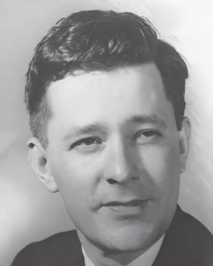
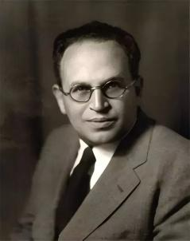
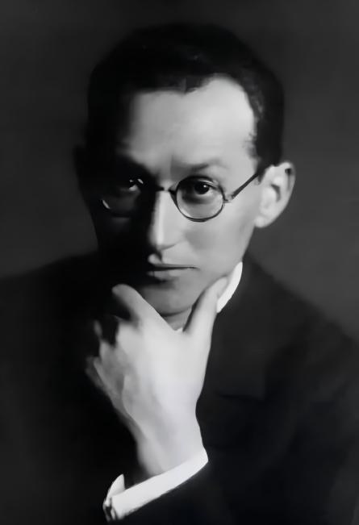

代表学者

施拉姆被公认为“传播学之父”。他并非传播学思想的原创者，却是将传播学制度化、学科化的关键人物。1943年，他离开爱荷华大学作家工作坊，转向传播研究；1947年在伊利诺伊大学创办了世界上第一个传播学研究所；1955年转至斯坦福大学，继续培养大批传播学博士，将传播学推广至全美和全球。 施拉姆的核心贡献在于“整合”。他将拉斯韦尔、拉扎斯菲尔德、霍夫兰和勒温四位先驱的理论与研究成果加以综合，编写了首部大众传播学教科书《大众传播学》（1949年），并与赛伯特和彼得森合著《报刊的四种理论》（1956年），将全球报业体制划分为威权主义、自由主义、社会责任和苏联共产主义四种模式——虽然该书后来被批评为冷战意识形态产物，但它长期垄断了媒介体制研究的议题设置。施拉姆晚年转向国际发展传播学，受联合国教科文组织委托，撰写《传播与改变》（与勒纳合著，1976年），推动传播学走向全球南方。1982年，施拉姆首次访华，在中国人民大学和复旦大学讲学，为中国传播学的起步提供了关键推力，被视为中国传播学诞生的标志性事件。
拉斯韦尔是美国政治学家、传播学家，芝加哥学派政治学传统的代表。1926年获芝加哥大学博士学位，曾任教于芝加哥大学和耶鲁大学法学院。他的研究横跨政治学、精神分析学和传播学。 1948年，拉斯韦尔发表《社会传播的结构与功能》（The Structure and Function of Communication in Society）一文，提出传播学史上最经典的分析框架：谁（Who）？说什么（Says What）？通过什么渠道（In Which Channel）？对谁说（To Whom）？产生什么效果（With What Effect）？——这就是“5W模式”，奠定了传播学研究的五大领域：控制分析、内容分析、媒介分析、受众分析和效果分析。 同一论文中，拉斯韦尔还提出了传播的三大社会功能：环境监视、社会协调和社会遗产传承。这一功能分析框架后来被赖特和施拉姆等人不断扩展和修正。 拉斯韦尔还是宣传研究的先驱。1927年出版《世界大战中的宣传技巧》，对一战交战国宣传策略进行系统分析，开创了内容分析与宣传研究传统。何道宽翻译的《社会传播的结构与功能》（双语版）是国内最通用的阅读版本。

拉扎斯菲尔德是奥地利裔美国社会学家，哥伦比亚大学应用社会研究所创始人，经验学派方法论的主要奠基人。 1940年，他在俄亥俄州伊利县进行美国总统选举追踪调查，1944年与贝雷尔森和高德特出版《人民的选择》（The People's Choice）。这项研究本想证明大众媒介的强大效果，结果却发现了相反的事实：只有约8%的选民直接因媒体宣传改变投票意向，大多数人的投票决定受到人际影响。由此，“两级传播”和“意见领袖”概念诞生，开启了“有限效果论”时代。1955年，拉扎斯菲尔德与卡茨出版《个人影响》，进一步系统化了意见领袖理论，强调大众传播效果经由人际关系网络的中介。 拉扎斯菲尔德的另一重要贡献是方法论创新。他发明了拉扎斯菲尔德-斯坦顿节目分析仪，推广了固定样本追踪调查方法，将定量研究确立为传播学的主流范式。他也是将默顿引入传播学合作的关键人物。罗杰斯在《传播学史》中评价，拉扎斯菲尔德“不仅是一种研究方法的创始人，更是传播研究之研究机构的创始人”。唐茜翻译的《人民的选择》中译本（中国人民大学出版社，2012年）为中文读者提供了可靠读本。
霍夫兰是美国实验心理学家，耶鲁大学心理学教授，耶鲁传播研究项目的主持者。他将控制实验法引入传播效果研究，开创了社会心理学取向的传播研究传统。 二战期间，霍夫兰受美国陆军部委托，研究军事训练影片对士兵态度的影响。战后，他带领耶鲁团队系统研究劝服与态度改变，1953年出版《传播与劝服》（Communication and Persuasion），与贾尼斯和凯利合著。耶鲁项目研究了信源可信度（高可信度信源在短期内更有效，但存在“睡眠者效应”随时间的衰减）、信息结构（一面理与两面理对不同教育程度受众的效果差异）、恐惧诉求的强度与劝服效果的关系等核心问题。霍夫兰的实验发现：在涉及复杂议题时，两面理对教育程度较高的受众更有效；中等程度的恐惧诉求劝服效果最佳，过低或过高均不利。这些发现至今仍是健康传播、广告传播的基本策略依据。

勒温是德裔美国心理学家，拓扑心理学的创始人，群体动力学的奠基人，被公认为传播学四大奠基人之一。他早年任教于柏林大学，1933年因纳粹迫害流亡美国，先后在爱荷华大学和麻省理工学院任教。 勒温对传播学的核心贡献在于“把关人”概念的提出。1947年，他在《群体生活的渠道》一文中指出，社会信息的传播渠道中存在某些“关口”，信息能否通过取决于“把关人”的决策。这一概念后来由怀特在1950年发展为“把关人”理论，成为传播学控制分析的重要基石。勒温还创立了群体动力学，研究群体对个体行为的影响，强调“群体的性质不是其成员个体性质的总和，而是一个具有自身结构的整体”。他在《社会科学中的场论》中系统阐述了场论——人的行为是个人因素与环境因素相互作用的结果，这一思想深刻影响了后来的态度改变研究。 勒温的研究方法创新同样影响深远。他将实验方法引入社会心理学，开创了“行动研究”传统，主张研究应服务于社会问题的解决。1946年，他创立了“群体决策”研究，发现群体讨论比个人说服更能改变态度和行为，这一发现直接影响了霍夫兰的劝服研究。勒温英年早逝，未及看到传播学作为一个学科的正式诞生，但其“把关人”概念和群体动力学为传播学提供了重要的理论起点。
伊莱休·卡茨（Elihu Katz，1926-2021）是美籍以色列社会学家，传播学经验学派的代表性人物之一。他长期任教于芝加哥大学、南加州大学、宾夕法尼亚大学及以色列希伯来大学等高校，与拉扎斯菲尔德、默顿共同塑造了哥伦比亚学派以量化研究与效果研究为主导的学术传统。 卡茨的学术贡献主要体现在三个层面。其一，开创“使用与满足”理论。 他将媒介接触行为概括为“社会因素＋心理因素——媒介期待——媒介接触——需求满足”的因果连锁过程。这一理论彻底扭转了此前效果研究从传播者视角发问的传统，不再追问“媒介对人做了什么”，而是转向“人用媒介来做什么”，将受众重新定位为具有明确需求的主动使用者。其二，提出“两级传播”与“意见领袖”概念。 卡茨与拉扎斯菲尔德合著《人际影响》（1955年），通过对伊利县选民的追踪调查发现：媒介信息并非直接抵达受众，而是先经由意见领袖过滤与转译后，再流向一般受众。这一发现打破了“魔弹论”的迷思，为“有限效果论”奠定了实证基础。其三，提出“媒介事件”理论。 1992年，卡茨与戴扬合作出版《媒介事件：历史的现场直播》，分析奥运会、国庆阅兵等大型电视直播如何将重大历史事件建构为全社会共同观看的“仪式性”时刻，整合社会并唤起集体记忆。 卡茨的研究横跨社会学、心理学、传播学等多学科，展现了跨领域研究的广度与深度。他不仅塑造了哥伦比亚学派的学术传统，也深刻影响了整个传播学科的学术版图。其“使用与满足”理论精准解释了今天受众主动选择媒介内容的行为——从刷短视频到使用表情包，均可由此得到理解。卡茨晚年关注媒介事件在新媒体环境下的演变，为后续的新媒介事件研究提供了理论起点。
核心理论
1.5W传播模式
1948年，拉斯韦尔在《社会传播的结构与功能》一文中提出这一经典框架，用一句话概括传播过程：谁（Who）→说什么（Says What）→通过什么渠道（In Which Channel）→对谁说（To Whom）→产生什么效果（With What Effect）。这一简洁框架奠定了传播学研究的五大领域——控制分析、内容分析、媒介分析、受众分析和效果分析——为学科的建制化提供了基本坐标。同一论文中，拉斯韦尔还提出了传播的三大社会功能：环境监视、社会协调和社会遗产传承，这一功能分析后来被赖特和施拉姆等人不断扩展。该模式被批评为过于线性、单向，忽略了反馈机制和传播情境的复杂性，但作为学科建制的奠基性文本，其历史地位无可替代，至今仍是传播学入门教学中最基本的认知地图。
2.议程设置理论
1972年，麦库姆斯和肖在《舆论季刊》发表教堂山研究，首次用实证方法证明媒介议程与公众议程之间存在显著相关，这一发现的思想源头可追溯至李普曼1922年提出的“拟态环境”。理论随后经历了三个层面的演进：第一层面“议题议程设置”回答“媒体告诉我们想什么”；第二层面“属性议程设置”由麦库姆斯等于2000年正式提出，回答“媒体告诉我们怎么想”；第三层面“网络议程设置”由郭蕾和麦库姆斯于2011年提出，认为媒介将不同议题和属性以特定方式关联，在公众大脑中形成相似的认知网络。该理论是经验学派效果研究最具代表性的理论成果，始终面临因果方向的争议——究竟是媒介影响公众，还是公众影响媒介？数字时代，算法推荐使“公共议程”趋于瓦解，但“媒介间议程设置”在重大公共事件中依然强势。
3.两级传播与意见领袖
1940年，拉扎斯菲尔德等人在伊利县选举研究中意外发现，大众媒介的影响并非直接到达受众，而是先影响“意见领袖”，再经由人际传播传递给追随者，这一发现打破了“魔弹论”的迷思，开启了有限效果论时代，该成果于1944年出版的《人民的选择》中正式发表。1955年，卡茨和拉扎斯菲尔德在《个人影响》中系统化这一发现，将意见领袖定义为特定领域内具有较高公信力和信息获取能力的个体，充当媒介与大众之间的信息桥梁。罗杰斯后来将意见领袖概念引入创新扩散研究，将其定位为创新扩散的关键节点。数字时代的“关键意见领袖”（KOL）和“网红经济”是该理论在社交媒体环境的延续与变异。批评者认为两级传播过于简化实际传播流程，存在多级传播和水平传播的可能。
4．劝服与态度改变
霍夫兰及其耶鲁团队在二战期间受美国陆军部委托研究军事训练影片对士兵态度的影响，战后将实验延续至耶鲁大学，1953年出版《传播与劝服》，系统报告了信源可信度、信息结构、恐惧诉求和群体归属等变量对态度改变的影响。研究发现：高可信度信源在短期内劝服效果更强，但存在“睡眠者效应”——信源与信息在记忆中的关联随时间衰减；两面理（同时呈现正反论点）对教育程度较高的受众更有效；中等强度的恐惧诉求劝服效果最佳，过低或过高均不利。这一系列研究开创了社会心理学取向的传播效果研究传统，将控制实验法确立为传播效果研究的核心方法论。批评者指出实验室情境与真实传播环境差异较大，但其对劝服机制的精细分析至今仍是健康传播、广告传播的基本策略依据。
5.创新扩散
1962年，罗杰斯出版《创新的扩散》，综合人类学、社会学和传播学研究成果，提出创新的S型扩散曲线，成为发展传播学的里程碑。理论核心包括创新的五项感知属性——相对优势、兼容性、复杂性、可试验性、可观察性——以及五类采纳者：创新者、早期采用者、早期大多数、后期大多数和落后者。扩散过程被分为认知、说服、决定、实施和确认五个阶段，意见领袖和变革推动者在其中起关键作用。该理论广泛应用于农业推广、公共卫生传播和新技术普及，祝建华的新媒体权衡需求理论部分延续了这一研究传统。然而，理论带有明显的“亲创新偏见”，默认创新总是好的、应该被采纳，对创新失败的案例和社会结构因素对采纳的限制关注不足。
6.使用与满足理论
该理论诞生于20世纪40年代，赫佐格最早研究广播剧女性听众，贝雷尔森调查报纸罢工期间的读者需求，开启了从“媒介对人们做了什么”到“人们用媒介做了什么”的范式转换。1973至1974年，卡茨、布鲁姆勒和古列维奇系统总结出受众使用媒介的五类需求：认知需求、情感需求、个人整合需求、社会整合需求和缓解压力需求。这一理论的核心假设是受众具有主动性，能够意识到自身需求并有目的地选择媒介来满足这些需求。数字时代该理论全面复兴，祝建华2004年提出“新媒体权衡需求理论”，认为用户只有在感知到新媒体比传统媒体更能满足其需求时才会发生媒介替代，喻国明关于传媒影响力的研究也从产业层面回应了受众选择问题。批评者指出，该理论过度强调个体能动性而忽略媒介内容的结构性影响，受众的“需求”本身可能就是媒介塑造的产物，且难以解释成瘾性媒介使用等非理性行为。
7.培养理论
20世纪60年代，格伯纳团队启动“文化指标”项目，通过对电视暴力内容的系统分析提出培养理论，其核心假设是：长期大量接触电视的人，对现实世界的认知会逐渐趋近于电视所呈现的“象征性现实”。该理论包含两个核心概念：“主流化”指不同社会群体的观点差异因重度收视而趋于缩小，“共鸣”指当电视内容与观众个人现实经验一致时培养效果加倍。标志性发现是“卑鄙世界综合征”——电视的重度收视者倾向于高估现实世界的暴力发生率，对社会产生更强的不信任感。张国良等人在中国的全国抽样调查为该理论的本土验证提供了数据支持。早期方法论受到控制变量不足可能导致伪相关的质疑，也有人批评该理论忽略了受众的主动解码能力和媒介使用的具体情境，但其关注长期效果的理论视角在算法时代依然具有解释力。
8.知识鸿沟
1970年，蒂奇纳、多诺霍和奥利恩提出经典假说：当大众媒介信息在一个社会系统中持续增长时，社会经济地位较高者获取信息的速度比地位较低者更快，两者间的知识差距将扩大而非缩小。后续研究丰富了影响这一差距的变量：除教育水平外，兴趣动机、社交网络和社区同质性等均被发现有显著的调节作用。进入数字时代，该理论延伸为“数字鸿沟”研究，从第一层“接入沟”（硬件和网络的拥有差异）、第二层“使用沟”（数字技能和信息素养的分化）发展到第三层“收益沟”（从数字技术中获取实质性经济、社会和政治收益的能力差距）。祝建华等人的研究为理解数字时代的媒介接入差异提供了重要的理论工具。批评者指出，知识鸿沟并非必然扩大，在社区同质化或议题关注度极高时可能缩小，且理论带有较强的阶级决定论色彩，对受众能动性和替代性信息渠道的重视不足。
9.沉默的螺旋
1974年，德国学者诺尔-诺依曼在《舆论季刊》发表论文，基于德国大选期间的实证观察提出该理论。其核心假设是：个人因害怕被社会孤立，在表达观点前会通过“准统计感官”估计多数意见的分布，若发现自身观点处于劣势则倾向于保持沉默，这一沉默行为反过来强化了优势意见的感知，形成螺旋式上升的强效果。该理论被广泛应用于解释选举、道德争议等公开场域的舆论形成过程。网络环境中出现了“反沉默的螺旋”现象——匿名性降低了孤立恐惧，少数派可能主动发声挑战主流意见。该理论受到的批评包括：过度依赖“孤立恐惧”这一心理假设，并非所有个体都对社会孤立同等敏感；“多数无知”未必导致沉默；在线环境中的“回音室效应”可能在局部强化而非消弭少数观点。
10.第三人效果
1983年，戴维森在《舆论季刊》发表论文提出“第三人效果”假说，其核心假设是：人们倾向于高估大众传播对他人的影响而低估对自己的影响。这种认知偏差可能进一步导致行动层面的后果——例如，因为认为某些内容对“他人”有害而支持媒介内容审查，或因预判“他人”会抢购而跟风囤货。该理论在健康传播（如烟草广告管制研究）和政治传播（如民调报道的影响研究）等领域得到了广泛验证。然而，并非所有传播内容都引发第三人效果：正面内容可能出现“第一人效果”，即人们认为对自己的影响大于对他人；而当人们感知到“他人”也具备抵抗力时，效果可能反转。尽管存在这些边界条件，第三人效果揭示了传播效果研究中“感知”与“实际”之间的关键差异，具有独特的理论价值。
11.新闻生产社会学
1978年，盖伊·塔克曼出版《做新闻》，将新闻视为一种“现实建构”的社会活动，开创了新闻生产社会学的系统研究传统。她提出“新闻是现实的窗口”而非镜子——新闻机构通过类型化处理、时空网络布局和新闻价值标准等机制，将纷繁复杂的社会现实转化为可被日常管理的“硬事实”。她最具颠覆性的发现是：“客观性”并非一种认识论原则，而是一种“策略性仪式”——记者通过引用对立信源、呈现辅助证据、使用引号等程序性操作来宣示报道的客观性，其深层动机在于规避职业风险和外部批评。在中国，陆晔和潘忠党“成名的想象”直接与塔克曼对话，分析了中国新闻从业者在社会转型过程中建构专业主义话语的独特路径；潘忠党1997年对新闻改革的社会学考察也是这一传统的经典延续。这一理论的局限在于，对新闻生产中意识形态运作的分析相对薄弱，且较少关注受众端如何解读新闻文本，但其对新闻“客观性”的祛魅分析具有深远影响。
- [1] [美]哈罗德·D·拉斯韦尔 著，何道宽 译.社会传播的结构与功能（双语版）[M].北京：中国传媒大学出版社，2017.
- [2] [美]保罗·F·拉扎斯菲尔德，伯纳德·贝雷尔森，黑兹尔·高德特 著，唐茜 译.人民的选择：选民如何在总统选战中做决定[M].北京：中国人民大学出版社，2012.
- [3] [美]卡尔·霍夫兰，欧文·贾尼斯，哈罗德·凯利 著，张建中，李雪晴 等译.传播与劝服：关于态度转变的心理学研究[M].北京：中国人民大学出版社，2015.
- [4] [美]伊莱休·卡茨，保罗·F·拉扎斯菲尔德 著，张宁 译.人际影响：个人在大众传播中的作用[M].北京：中国人民大学出版社，2016.
- [5] [美]埃弗雷特·M·罗杰斯 著，辛欣 译.创新的扩散[M].北京：中央编译出版社，2002.
- [6] [美]马克斯韦尔·麦库姆斯 著，郭镇之，徐培喜 译.议程设置：大众媒介与舆论（第三版）[M].北京：北京大学出版社，2023.
- [7] [美]希伦·洛厄里，梅尔文·德弗勒 著，刘海龙 等译.大众传播效果研究的里程碑[M].北京：中国人民大学出版社，2009.
- [8] [美]帕梅拉·J·休梅克，[美]蒂姆·P·沃斯 著，孙五三 译.把关理论[M].北京：中国人民大学出版社，2022.
- [1] White, D. M. The Gatekeeper: A Case Study in the Selection of News[J]. Journalism Quarterly, 1950, 27(4): 383-390.
- [2] McCombs, M. E., & Shaw, D. L. The Agenda-Setting Function of Mass Media[J]. Public Opinion Quarterly, 1972, 36(2): 176-187.
- [3] McCombs, M., Lopez-Escobar, E., & Llamas, J. P. Setting the Agenda of Attributes in the 1996 Spanish General Election[J]. Journal of Communication, 2000, 50(2): 77-92.
- [4] Guo, L., & McCombs, M. E. Network Agenda Setting: A Third Level of Media Effects[C]. Paper presented at the Annual International Communication Association Conference, Boston, MA, 2011.
- [5] Guo, L., & McCombs, M. Toward the Third-Level Agenda-Setting Theory: A Network Agenda-Setting Model[C]. Paper presented at the Association for Education in Journalism and Mass Communication Annual Conference, St. Louis, MO, 2011.
- [6] McCombs, M. E., Shaw, D. L., & Weaver, D. H. New Directions in Agenda-Setting Theory and Research[J]. Mass Communication and Society, 2014, 17(6): 781-802.
- [7] Vargo, C. J., & Guo, L. Networks, Big Data, and Intermedia Agenda Setting: An Analysis of Traditional, Partisan, and Emerging Online U.S. News[J]. Journalism & Mass Communication Quarterly, 2017, 94(4): 1031-1055.
- [8] Guzman, A. L., & Lewis, S. C. Artificial intelligence and communication: A Human-Machine Communication research agenda[J]. New Media & Society, 2020, 22(1): 70-86.
- [9] 郭庆光.大众传播、信息环境与社会控制——从“沉默的螺旋”假说谈起[J].新闻与传播研究，1995（3）：33-38.
- [10] 郭镇之.关于大众传播的议程设置功能[J].国际新闻界，1997（3）：18-22.
- [11] 陈力丹.议程设置理论简说[J].新闻与传播研究，1999（3）：32-37.
- [12] 陆晔，潘忠党.成名的想象：中国社会转型过程中新闻从业者的专业主义话语建构[J].新闻学研究，2002（71）：17-59.
- [13] 陈阳.框架分析：一个亟待澄清的理论概念[J].国际新闻界，2007（4）：19-23.
- [14] 陈雪奇.两级传播理论支点解析[J].厦门大学学报（哲学社会科学版），2013（5）：142-148.
- [15] 崔波涛.从两级到多级：两级传播论发展综述[J].新闻传播，2014（5）：163-164.
- [16] 史安斌，王沛楠.议程设置理论与研究50年：溯源·演进·前景[J].新闻与传播研究，2017，24（10）：13-28.
- [17] 张秋.新媒体语境下创新扩散理论的不适应与发展[J].青年记者，2016（24）：43-44.
- [18] 何琦，艾蔚，潘宁利.数字转型背景下的创新扩散：理论演化、研究热点、创新方法研究——基于知识图谱视角[J].科学学与科学技术管理，2022，43（6）：17-50.